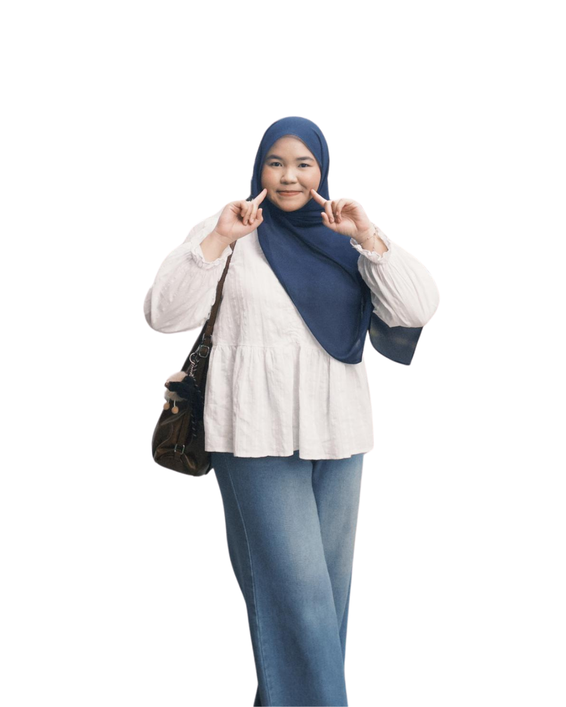
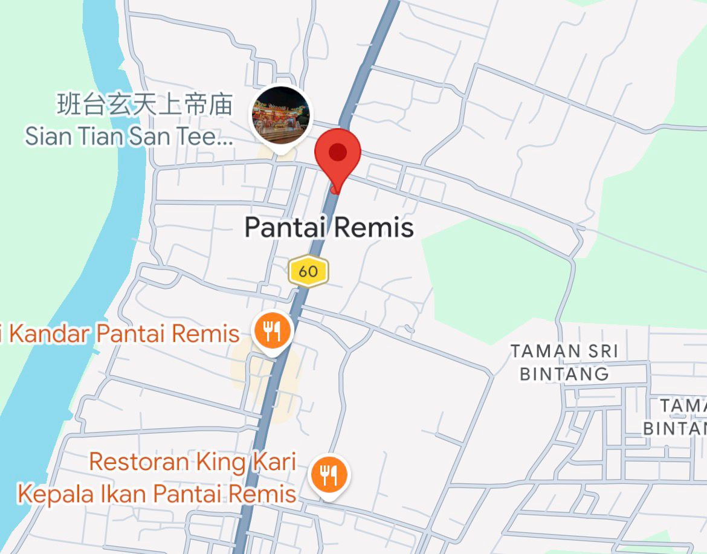
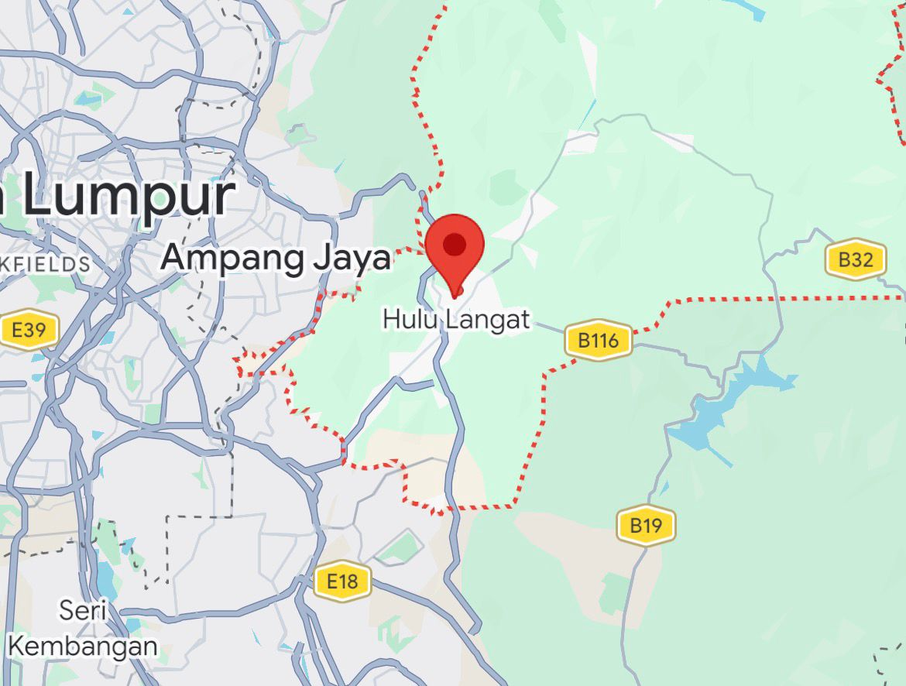

Nuralya Irdina binti Shaarani
Alya (friends)
Dina (family)
5 June 2006
20 years old

Diploma in Library Informatics
Semester 4
UiTM Cawangan Kedah
ENFP
little traits that probably describe me a little too well.
gets excited over the smallest things and somehow finds joy in almost everything.
laughs at the dumbest jokes and sends way too many memes.
professional yapper with endless stories and chaotic energy.
a quick glimpse into the little things i enjoy and the things i'd rather avoid.
| Likes | Dislikes |
|---|---|
| Matcha runs | Dishonesty |
| Online shopping | Loud chewing |
| Collecting trinkets | Toxic people |
| Taking videos over pictures | Waking up early |
| Cats | Extremely spicy food |
| Long yap sessions | Crowded places |
pieces of home that shaped who i am today.


Although I grew up in Kuala Lumpur, my hometown will always be Pantai Remis, Perak and Hulu Langat, Selangor.
Both places carry pieces of my family's story, childhood memories and a sense of belonging that I hold close to my heart.
No matter how far life takes me, these places will always feel like home.